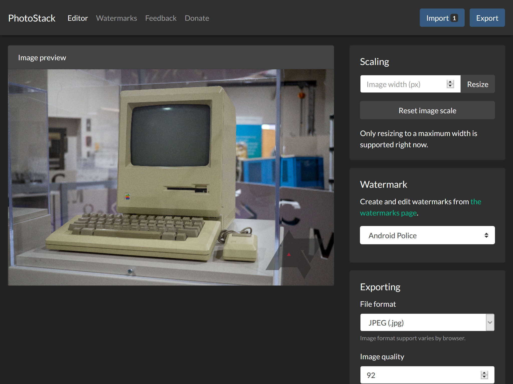
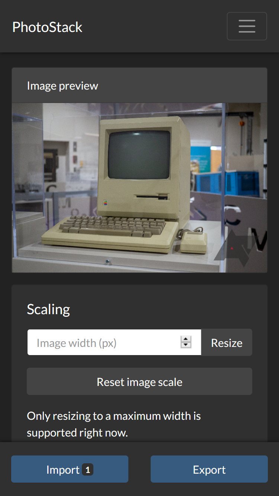
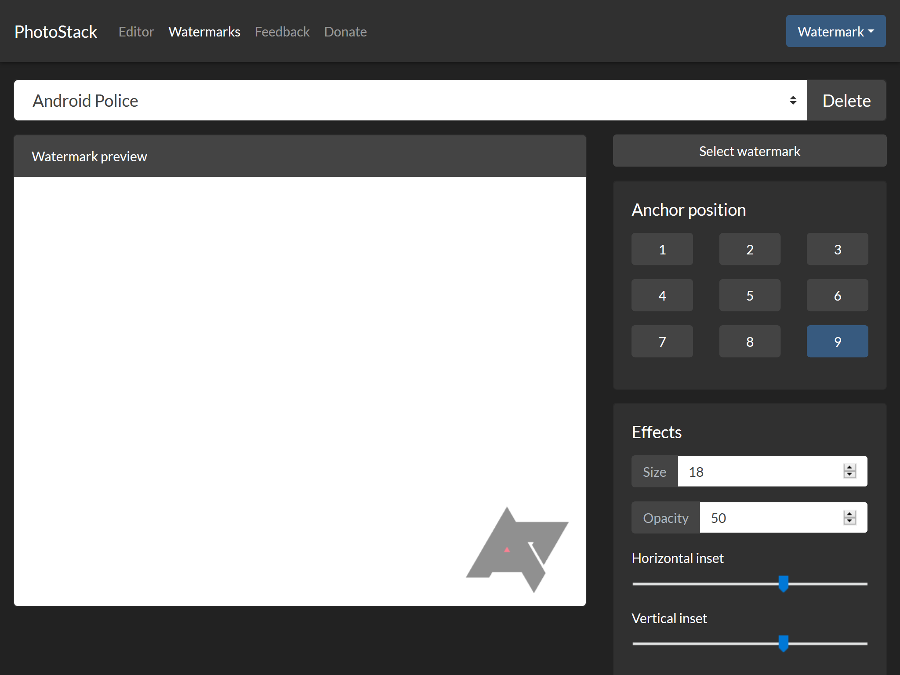

After months of work, I released a web app called PhotoStack a few months ago. It’s a batch photo editor, allowing you to edit and convert many images at once, using only your web browser. The interface wasn’t super intuitive, but I’ve been working to improve it, and now PhotoStack looks and works great on both desktop and mobile.
On the desktop (and tablets), PhotoStack now uses a dual-pane layout that uses all available screen width. A preview is on the left, and all settings are on the right. If your preview image is especially tall, it will shrink to fit your screen’s height. Also, it will always stay in view, even if you scroll up and down the options.

The mobile view has seen the most improvement. Previously, exporting images used to require clicking the menu button, and then clicking the Export button. On small screens, PhotoStack now displays a toolbar permanently fixed to the bottom of the screen, which contains both the Import and Export buttons. PhotoStack is much easier to use this way.

The watermark editor has received the same visual facelift, with a two-pane interface and a fixed toolbar on mobile devices. I think there’s still more I could do in the way of making the watermark editor easier to use, but this is still an improvement.

These interface changes are on top of everything else added to PhotoStack since release, which include a faster multi-process export function for newer browsers, support for the Web Share Level 2 on Android (exported images can be directly shared to installed apps), notifications for finished exports, and more.
If you haven’t already, give PhotoStack a shot at https://photostack.app!